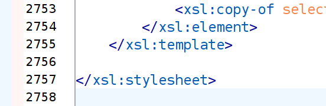

Pipelined XSLT
Balisage 2020
Ari Nordström | ari.nordstrom@gmail.com
- Step 1
- Step 2
- Step 3
- Step 1
- Step 3
- Step 4
- Step 2
Where I come from
Developing
Nic Gibson's XProc Tools
Manifests
<manifest xml:base=".">
<group description="Just a demo" xml:base="../xslt/">
<item href="step1.xsl" description="To element one">
<meta name="param1" value="value1"/>
</item>
<item href="step2.xsl" description="To element two"/>
<item href="step3.xsl" description="To element three">
<meta name="param3A" value="value3A"/>
<meta name="param3B" value="value3B"/>
</item>
<item href="step4.xsl" description="To element four"
enable="true"/>
</group>
</manifest>
<xsl:stylesheet xmlns:xsl="http://www.w3.org/1999/XSL/Transform"
version="2.0">
<xsl:param name="param1"/>
<xsl:template match="/">
<xsl:apply-templates select="node()" mode="STEP-1"/>
</xsl:template>
<xsl:template match="*" mode="STEP-1" priority="1">
<one one="{$param1}">
<xsl:copy-of select="@*"/>
<xsl:apply-templates select="node()" mode="STEP-1"/>
</one>
</xsl:template>
<xsl:template match="node()" mode="STEP-1">
<xsl:copy>
<xsl:copy-of select="@*"/>
<xsl:apply-templates select="node()" mode="STEP-1"/>
</xsl:copy>
</xsl:template>
</xsl:stylesheet>
<xsl:stylesheet xmlns:xsl="http://www.w3.org/1999/XSL/Transform"
version="2.0">
<xsl:template match="/">
<xsl:apply-templates select="node()" mode="STEP-2"/>
</xsl:template>
<xsl:template match="one" mode="STEP-2">
<two>
<xsl:copy-of select="@*"/>
<xsl:apply-templates select="node()" mode="STEP-2"/>
</two>
</xsl:template>
<-- ... (identity transform) -->
</xsl:stylesheet>
ari@toddao:~/poc/tmp/debug/Activate_Learning.xml$ ls -lh
total 106M
-rw-r--r-- 1 ari ari 3,5M mar 5 16:16 0-Activate_Learning.xml
-rw-r--r-- 1 ari ari 3,5M mar 5 16:16 1-XLSX-UTIL_remove-empty.xsl.xml
-rw-r--r-- 1 ari ari 6,4M mar 5 16:16 2-XLSX-UTIL_normalisation.xsl.xml
-rw-r--r-- 1 ari ari 6,4M mar 5 16:16 3-XLSX-UTIL_hyperlinks.xsl.xml
-rw-r--r-- 1 ari ari 4,8M mar 5 16:16 4-XLSX-UTIL_cleanup.xsl.xml
-rw-r--r-- 1 ari ari 4,9M mar 5 16:16 5-XLSX2XML_structure.xsl.xml
-rw-r--r-- 1 ari ari 6,2M mar 5 16:16 6-XLSX2XML_courses.xsl.xml
-rw-r--r-- 1 ari ari 5,6M mar 5 16:16 7-XLSX2XML_dates.xsl.xml
-rw-r--r-- 1 ari ari 5,6M mar 5 16:16 8-XLSX2XML_locations.xsl.xml
-rw-r--r-- 1 ari ari 6,0M mar 5 16:16 9-XLSX2XML_fields.xsl.xml
-rw-r--r-- 1 ari ari 5,7M mar 5 16:16 10-EXC2XI_course.xsl.xml
-rw-r--r-- 1 ari ari 5,7M mar 5 16:16 11-EXC2XI_content-fields.xsl.xml
-rw-r--r-- 1 ari ari 5,7M mar 5 16:16 12-EXC2XI_course-links.xsl.xml
-rw-r--r-- 1 ari ari 5,5M mar 5 16:16 13-EXC2XI_categories.xsl.xml
-rw-r--r-- 1 ari ari 5,5M mar 5 16:16 14-EXC2XI_exc-locations.xsl.xml
-rw-r--r-- 1 ari ari 5,6M mar 5 16:16 15-EXC2XI_exc-events.xsl.xml
-rw-r--r-- 1 ari ari 5,3M mar 5 16:16 16-EXC2XI_exc-duration.xsl.xml
-rw-r--r-- 1 ari ari 5,3M mar 5 16:16 17-EXC2XI_exc-email.xsl.xml
-rw-r--r-- 1 ari ari 4,4M mar 5 16:16 18-EXC2XI_xi-dedupe.xsl.xml
-rw-r--r-- 1 ari ari 4,4M mar 5 16:16 19-EXC2XI_xi-cleanup.xsl.xml
One conceptual thing:
- Unordered lists
- Inline
- References
- ...
Refactor often!
Copy everything you're not explicitly processing
<xsl:copy-of select="@* except @style"/>
<xsl:attribute name="formatting" select="@style"/>
Breadcrumbs
<xsl:template match="para" mode="STEP-2">
<p role="{name(.)}">
...
</p>
</xsl:template>
Breadcrumbs
<xsl:attribute name="src-styling">
<xsl:for-each select="(@style,@frame)">
<xsl:value-of select="concat('@',name(.),'=',.)"/>
<xsl:value-of select="if (position()!=last())
then (' ')
else ()"/>
</xsl:for-each>
</xsl:attribute>
For this...
<para style="1" frame="dash">Test</para>
...we'd get
<p src-styling="@style=1 @frame=dash">...</p>
Step grouping
<manifest xml:base=".">
<group xml:base="../xslt/html2xml/">...</group>
...
<!-- CALS processing -->
<group xml:base="../xslt/cals/">...</group>
<!-- Xref and cite processing -->
<group xml:base="../xslt/refs/">...</group>
<!-- Cleanup -->
<group xml:base="../xslt/common/">...</group>
</manifest>
"Sequential convenience"
- Temp markup and mockery
- Temp lookups in step outputs
- ...

Don't give in to the dark side
Validation
- Schematron
- DTDs (for now)
Testing
<x:scenario
label="When converting a date in ECMA-376 format">
<x:call
function="sg:todate">
<x:param select="43836"/>
</x:call>
<x:expect
label="a readable dateTime value should result"
select="xs:dateTime('2020-01-08T00:00:00')"/>
</x:scenario>
XSpec manifest
<tests
manifest="../../pipelines/poc/poc-xlsx2xml-manifest.xml"
xml:base="/home/ari/Documents/repos/xlsx2xml/">
<group description="XLSX normalisation steps">
<test xslt="xslt/common/XLSX-UTIL_normalisation.xsl"
xspec="xspec/common/XLSX-UTIL_normalisation.xspec"
description="Normalise shared strings."/>
<test xslt="xslt/common/XLSX-UTIL_hyperlinks.xsl"
xspec="xspec/common/XLSX-UTIL_hyperlinks.xspec"
description="Normalise referenced hyperlinks."/>
</group>
<group description="Conversion steps">
<test xslt="xslt/common/XLSX2XML_structure.xsl"
xspec="xspec/common/XLSX2XML_structure.xspec"
description="Convert main structures."/>
<test xslt="xslt/common/XLSX2XML_dates.xsl"
xspec="xspec/common/XLSX2XML_dates.xspec"
description="Convert ECMA 376 dates to xs:dateTime."/>
<test xslt="xslt/common/XLSX2XML_locations.xsl"
xspec="xspec/common/XLSX2XML_locations.xspec"
description="Convert location info to exc,
group it in locations wrapper."/>
</group>
</tests>
<sg:run-xspecs
name="run-xspecs"
cx:depends-on="batch">
<p:with-option
name="tmp-folder-uri"
select="$tmp-dir"/>
<p:with-option
name="xspec-manifest-uri"
select="$xspec-manifest-uri"/>
<p:with-option
name="run-xspecs"
select="$run-xspecs"/>
</sg:run-xspecs>
Documenting
<item
description="Adds equation PI placeholders"
href="eqn-pi.xsl"/>
<x:scenario label="When converting a date in ECMA-376 format">
<x:call function="sg:todate">
<x:param select="43836"/>
</x:call>
<x:expect label="a readable dateTime value should result"
select="xs:dateTime('2020-01-08T00:00:00')"/>
</x:scenario>
Implementations
XProc 1.0 (Nic Gibson's XProc Tools)
- Read XSLTs to sequence
- Run 1st XSLT in sequence on input
- Drop 1st XSLT
- Feed output to next XSLT in sequence
- Rinse & repeat until no XSLTs left
XQuery 3.1
- Needed pipelined XSLT in eXist-db
- XQuery 3.1 module for pipelined XSLT
- Manifest, steps the same in XProc and XQ
- All dev in XProc
- eXist-db for production only
XProc 3.0?
- A lot of XProc Tools is now built-in
- XProc 3.0 is vastly simpler to write
- Convenience!
This looks a lot like a manifest:
<p:xslt>
<p:with-input port="stylesheet" href="..."/>
</p:xslt>
<p:store use-when="$debug" href="..."/>
<p:xslt>
<p:with-input port="stylesheet" href="..."/>
</p:xslt>
<p:store use-when="$debug" href="..."/>
...
End Notes
Orbeon XPL, XSLT 3.0/XPath 3.1 transform(), Ant, etc?
Why not?
Why?
https://github.com/sgmlguru/xproc-batch
(XProc Tools with wrappers and other utilities)
https://github.com/sgmlguru/xslt-pipelines
(example pipeline)